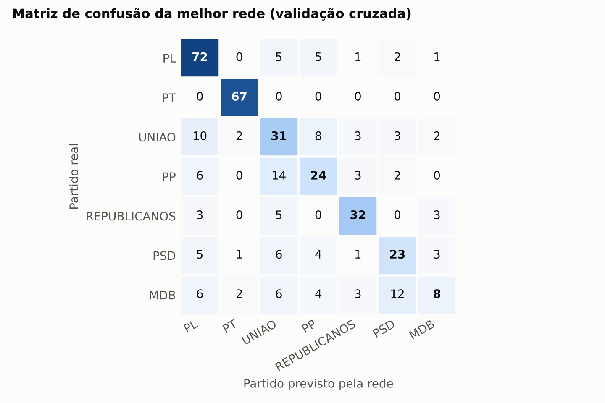
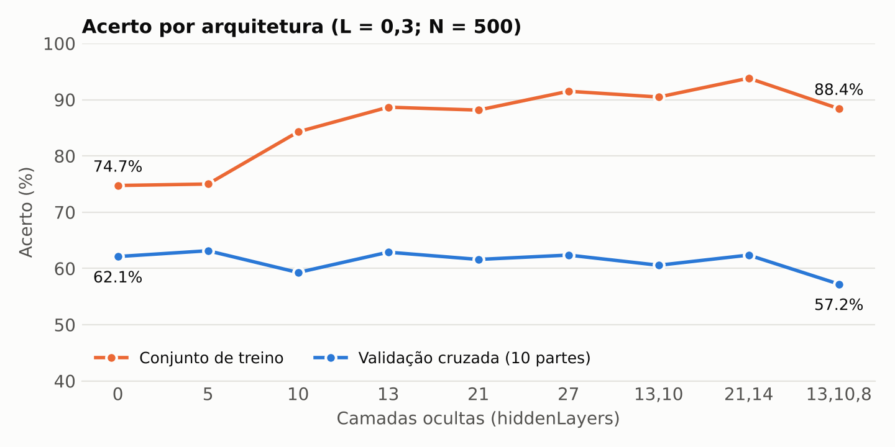
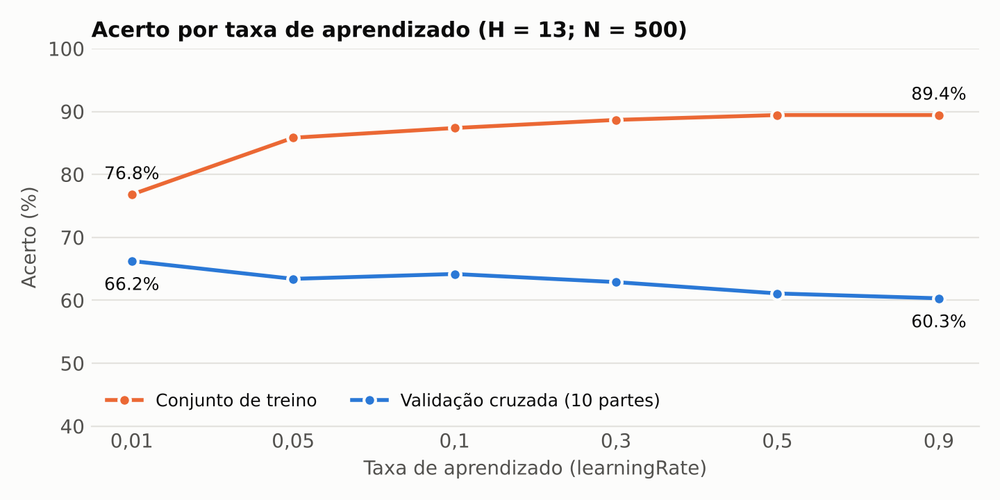
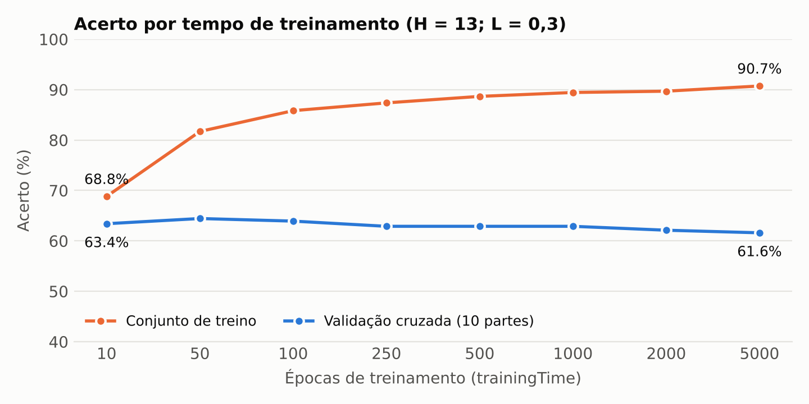

Rede MLP treinada no WEKA com 20 votações nominais do Plenário da Câmara dos Deputados em 2025. Dados do portal Dados Abertos da Câmara.
Linhas são o partido real, colunas o partido previsto. A rede reconhece todos os deputados do PT e a maioria dos do PL, e confunde entre si os partidos de centro, que votaram de forma parecida.

Mais neurônios e mais camadas aumentam o acerto no conjunto de treino, mas não na validação cruzada.

Foi o ajuste que mais importou: a taxa mais baixa deu o melhor resultado.

Treinar por mais épocas faz a rede decorar o conjunto de treino sem generalizar melhor.
